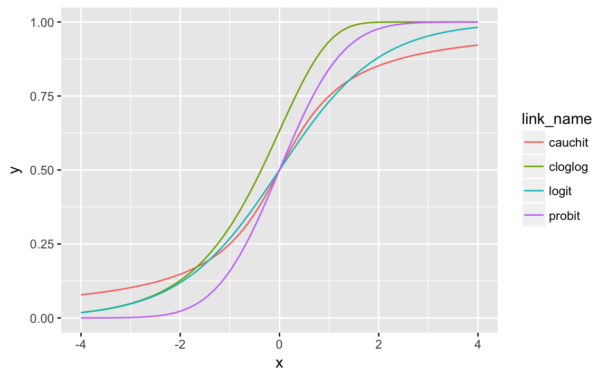

13 Binomial Models
Prerequisites
13.1 Introduction
Binomial models are used to an outcome that is a bounded integer, \[ y_i \in 0, 1, 2, \dots, n . \] The outcome is distributed Binomial, \[ \begin{aligned}[t] y_i \sim \dBinom \left(n_i, \pi \right) \end{aligned} \]
A binary outcome is a common special case, \[ y_i \in \{0, 1\}, \] and \[ \begin{aligned}[t] y_i &\sim \dBinom \left(1, \pi \right) & \text{for all $i$} \\ \end{aligned} \]
Depending on the link function, these are logit and probit models that appear in the literature.
13.2 Link Functions {link-function}
The parameter \(\pi \in (0, 1)\) is often modeled with a link function is and a linear predictor. \[ \pi_i = g^{-1}(\vec{x}_i \vec{\beta}) \]
There are several common link functions, but they all have to map \(R \to (0, 1)\).7
Logit: The logistic function, \[ \pi_i = \logistic(x_i\T \beta) = \frac{1}{1 + \exp(- x_i\T\beta)} . \] Stan function
softmax.Probit: The CDF of the normal distribution. \[ \pi_i = \Phi(x_i\T \beta) \] Stan function
normal_cdf.cauchit: The CDF of the Cauchy distribution. Stan function
cauchy_cdf.cloglog: The inverse of the conditional log-log function (cloglog) is \[ \pi_i = 1 - \exp(-\exp(x_i\T \beta)) . \] Stan function
inv_cloglog.
Of these link functions, the probit has the narrowest tails (sensitivity to outliers), followed by the logit, and cauchit. The cloglog function is different in that it is asymmetric.8 At zero its value is above 0.5, whereas the cauchit, logit, and probit links all equal 0.5 at 0,
map(c("logit", "probit", "cauchit", "cloglog"), make.link) %>%
map_df(
function(link) {
tibble(x = seq(-4, 4, length.out = 101),
y = link$linkinv(x),
link_name = link$name)
}
) %>%
ggplot(aes(x = x, y = y, colour = link_name)) +
geom_line()
Notes:
- The logistic distribution is approximately a Student-t with df=7.
13.2.1 Stan
In Stan, the Binomial distribution has two implementations:
binomial_lpdfbinomial_logit_lpdf.
The later implementation is for numeric stability.
Taking an exponential of a value can be numerically unstable, and binomial_logit_lpdf input is on the logit scale:
Whereas,
\[
y_i \sim \mathsf{binomial}(1 / (1 + \exp(x_i \beta)))
\]
the following is true,
\[
y_i \sim \mathsf{binomial\_logit}(x_i \beta)
\]
13.2.2 Example: Vote Turnout
Estimate a model of vote turnout in the 1992 from the American National Election Survey (ANES) as a function of race, age, and education. The data and example is from the Zelig library Zelig.9 You can load it with
13.2.3 Stan
A general Stan model for estimating logit models is:
// bernoulli_logit_1.stan
data {
// number of observations
int N;
// response
// vectors are only real numbers
// need to use an array
int y[N];
// number of columns in the design matrix X
int K;
// design matrix X
// should not include an intercept
matrix [N, K] X;
// priors on regression coefficients
real scale_alpha;
vector[K] scale_beta;
// keep responses
int use_y_rep;
int use_log_lik;
}
parameters {
// regression coefficient vector
real alpha;
vector[K] beta;
}
transformed parameters {
vector[N] eta;
eta = alpha + X * beta;
}
model {
// priors
alpha ~ normal(0., scale_alpha);
beta ~ normal(0., scale_beta);
// likelihood
y ~ bernoulli_logit(eta);
}
generated quantities {
// simulate data from the posterior
vector[N * use_y_rep] y_rep;
// log-likelihood posterior
vector[N * use_log_lik] log_lik;
for (i in 1:num_elements(y_rep)) {
y_rep[i] = bernoulli_rng(inv_logit(eta[i]));
}
for (i in 1:num_elements(log_lik)) {
log_lik[i] = bernoulli_logit_lpmf(y[i] | eta[i]);
}
}
Vote choice (vote) is modeled as a function of age, age-squared, income, and race.
Preprocess the data to create the design matrix, X, and the response y using the recipes package.
We will need to center and scale the design matrix.
turnout <- mutate(turnout, white = as.numeric(race == "white"))
rec_turnout <- recipe(vote ~ income + age + white,
data = turnout) %>%
step_poly(age, options = list(degree = 2)) %>%
prep(data = turnout, retain = TRUE)
X <- juice(rec_turnout, all_predictors(), composition = "matrix")
y <- juice(rec_turnout, all_outcomes(), composition = "matrix") %>%
drop()mod1_data <- list(
X = X,
N = nrow(X),
K = ncol(X),
y = y,
scale_alpha = 10,
scale_beta = 2.5 * apply(X, 2, sd),
use_y_rep = FALSE,
use_log_lik = TRUE
)13.2.3.1 rstanarm
The rstanarm package can estimate binomial models using the function stan_glm:
13.3 References
For general references on binomial models see Stan Development Team (2016 Sec. 8.5), McElreath (2016 Ch 10), A. Gelman and Hill (2007) [Ch. 5; Sec 6.4-6.5], Fox (2016 Ch. 14), and A. Gelman et al. (2013 Ch. 16).
Since the cumulative distribution function of a distribution maps reals to \((0, 1)\), any CDF can be used as a link function.↩
Beck, Katz, and Tucker (1998) show that the cloglog link function can be derived from a grouped duration model with binary response variables.↩
Example from Zelig-logit.↩